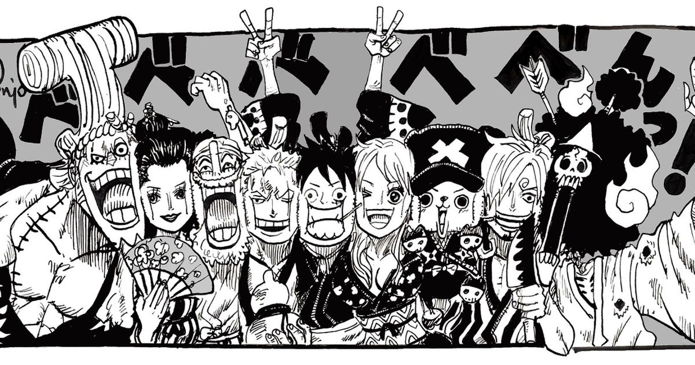
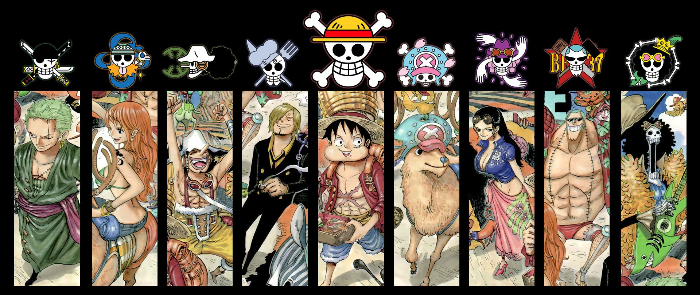

One Piece
Mugiwara crew

- Monkey D. Luffy- 3 000 000 000 Belly
- Roronoa Zoro- 1,111,000,000 Belly
- Nami- 366,000,000 Belly
- Usopp-500,000,000 Belly
- Sanji- 1,032,000,000 Belly
- Tony Tony Chopper- 1000 Belly
- Nico Robin-930,000,000 Belly
- Franky-394,000,000 Belly
- Brook-383,000,000 Belly
- Jinbei-1,100,000,000 Belly
The Straw Hat Pirates, also known as the Mugiwara Pirates, Straw Hat Crew or simply the Straw Hats, are an infamous and powerful pirate crew that originated from the East Blue. They are the main focus and protagonists of the manga and anime One Piece and are led by the main protagonist Monkey D. Luffy.
The "Straw Hats" are named after Luffy's signature hat that was given to him by "Red-Haired" Shanks and are first referred to as the Straw Hat Pirates by Smoker in the Arabasta Kingdom. The crew sailed on the Going Merry, their first official Straw Hat ship, up until the Water 7 Arc. During the Post-Enies Lobby Arc Franky and Iceburg built them a new ship which was named the Thousand Sunny by Iceburg, even though the members fought over different names.
Following the events on the Sabaody Archipelago, all the members were separated from one another by Bartholomew Kuma, a then-Warlord of the Sea and undercover agent of the Revolutionary Army. For two years, they trained in relatively isolated locations, becoming stronger for the sake of helping each other. They then reunited and have since continued to be a dynamic force in the New World, greatly disrupting the balance of the Three Great Powers, which would eventually lead to their captain being recognized as one of the Four Emperors.
